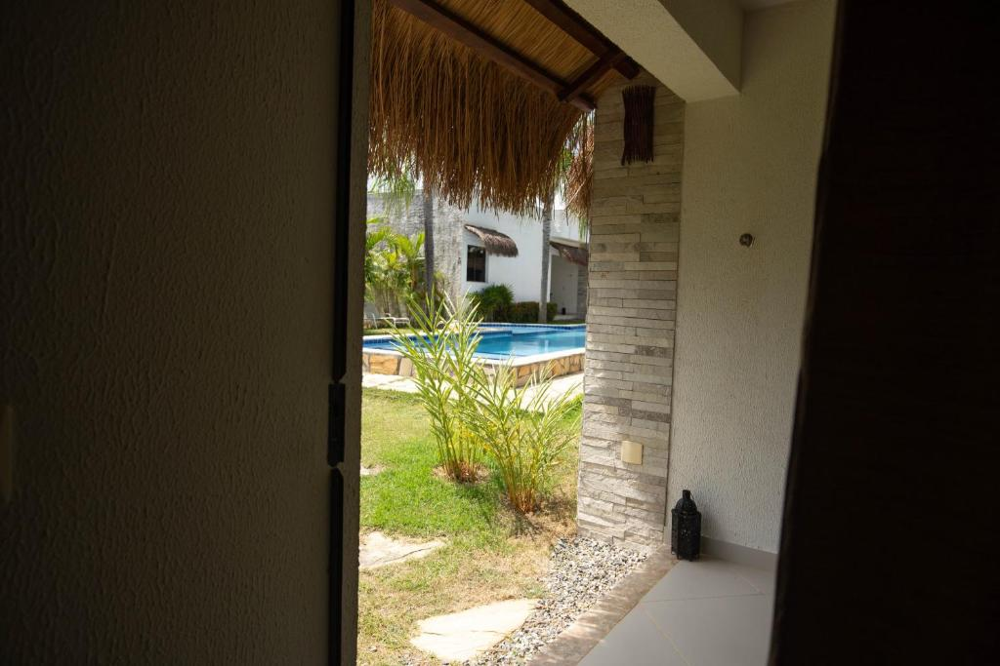

Nossa acomodação mais reservada. São apenas dois bangalôs, cada um com deck e ofurô privativos. Perfeito para lua de mel ou para a família.
Faça o tour
Detalhes
- Área: 45 m2 e deck de 15 m2
- Capacidade: até 4 pessoas
- Camas: casal king e duas de solteiro no mezanino
- Extras: ofurô, frigobar abastecido e cafeteira
- Pet: aceita pequeno porte
Nota dos hóspedes:
Apenas 2 bangalôs: reserve com antecedência.
Perguntas frequentes
O frigobar é cortesia?
Água e sucos são cortesia. Os demais itens são cobrados no check-out.
Vocês decoram para lua de mel?
Sim! Escolha a cor da decoração no formulário de reserva.